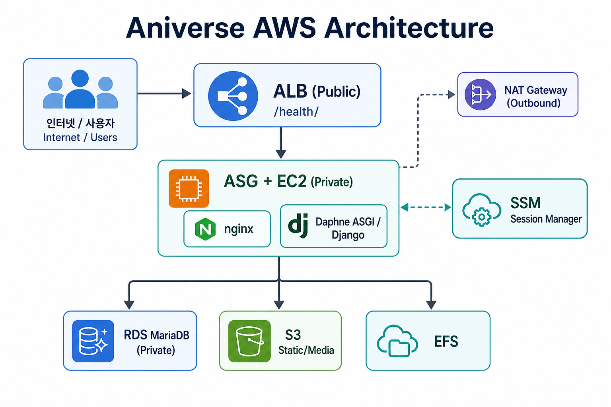
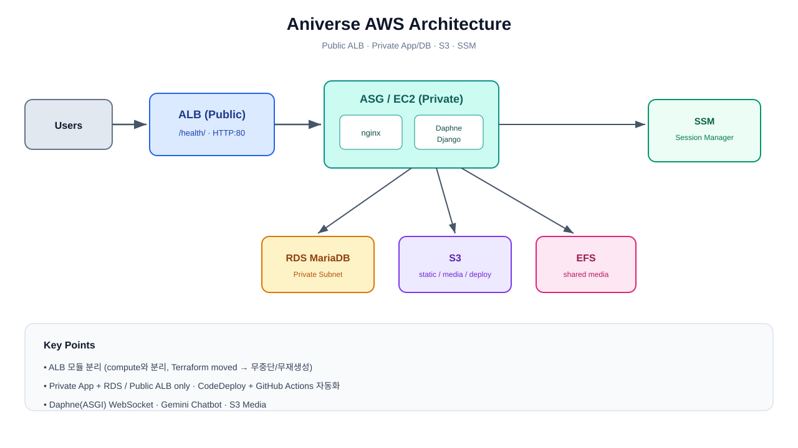
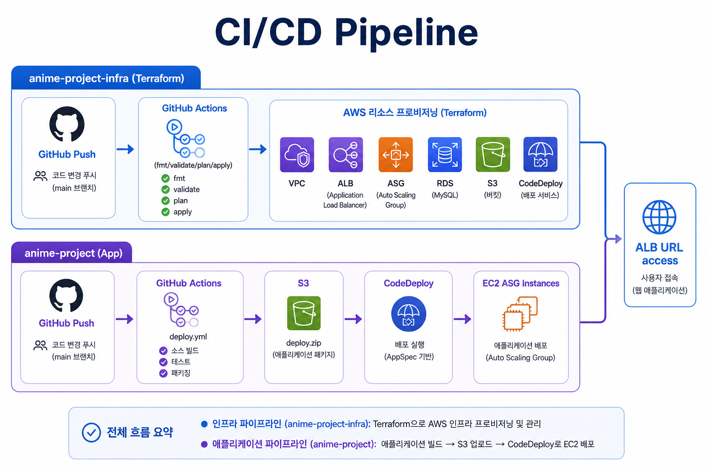
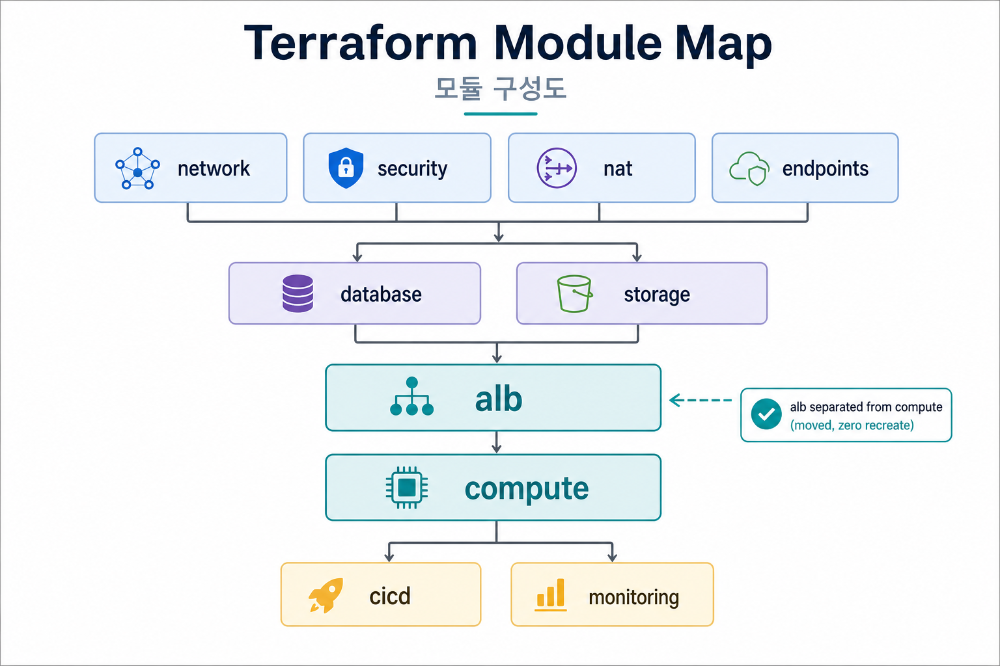
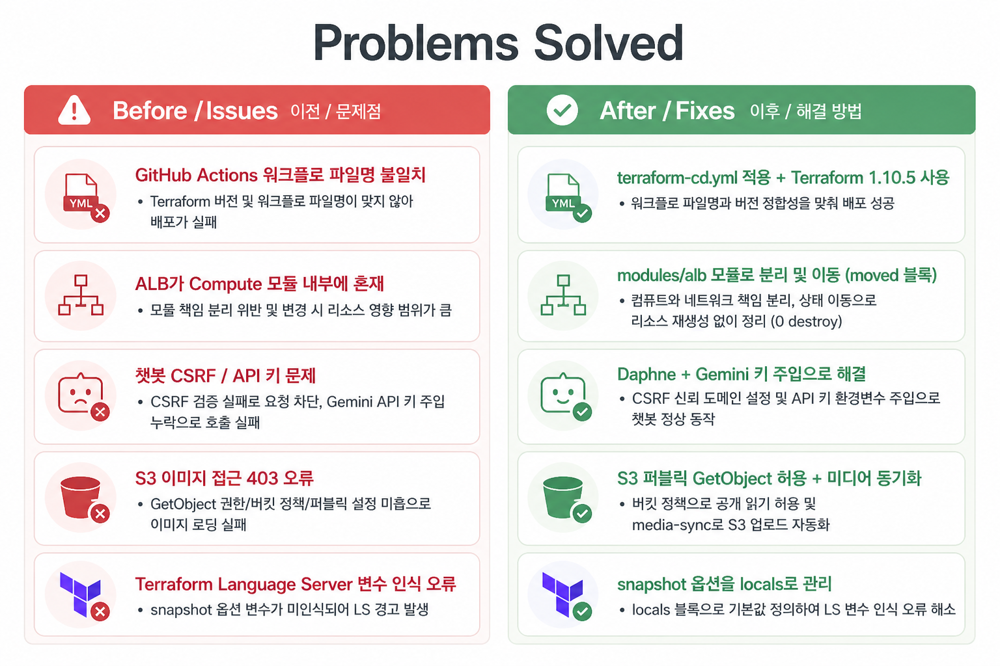

브라우저에서 열어 스크린샷 / PDF로 저장해 슬라이드에 붙이면 됩니다.





| 저장소 | 역할 | 주요 산출물 |
|---|---|---|
anime-project-infra | Terraform IaC | VPC, ALB, ASG, RDS, S3, CodeDeploy |
anime-project | 앱 CodeDeploy | Django + Daphne + nginx |
| 계층 | 모듈 | 설명 |
|---|---|---|
| 기반 | network, security, nat, endpoints | VPC/SG/NAT/SSM endpoint |
| 데이터 | database, storage | RDS, EFS, static S3 |
| 진입 | alb | ALB + Target Group + Listener |
| 컴퓨트 | compute | Launch Template, ASG, IAM |
| 운영 | cicd, monitoring | CodeDeploy, CloudWatch |
| 계층 | 구성 |
|---|---|
| Edge | ALB HTTP:80 · health /health/ |
| Web/App | nginx → Daphne(ASGI) → Django |
| Data | RDS MariaDB · S3 · EFS |
| Ops | SSM · CodeDeploy · GitHub Actions |
| 문제 | 해결 |
|---|---|
| GitHub Actions CD 미인식 | terraform-cd.yml + Terraform 1.10.5 |
| ALB가 compute에 묶임 | modules/alb 분리 + moved (0 recreate) |
| 챗봇/WebSocket 장애 | CSRF · Gemini 주입 · Daphne |
| 이미지 403 | S3 public GetObject + media sync |
| RDS var IDE 오탐 | database locals literal + CD 패치 |
pushterraform applySSM ready
ALB / ASG / RDS / S3 / CodeDeploy 생성·갱신
pushS3 zipCodeDeploy
ASG 인스턴스에 Django 앱 배포
출력 팁: 브라우저 인쇄 → PDF / 또는 영역 캡처로 PPT에 붙여넣기